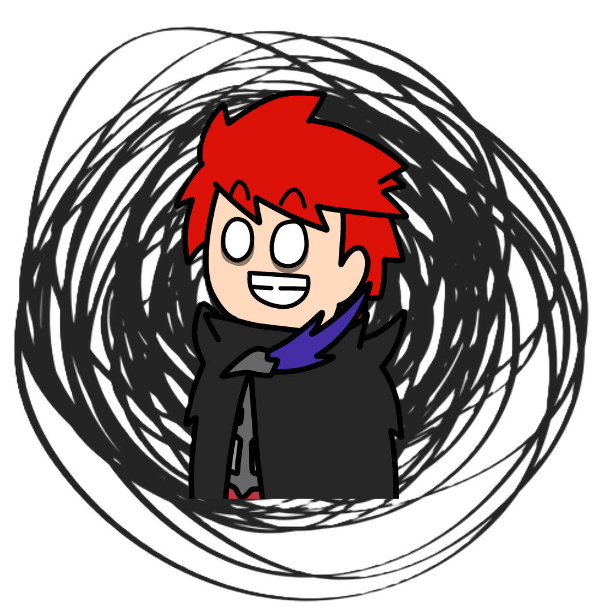

Bab 1 - SN

SN, Shaffarel Dwi Maulana - Nayla Eka Ardani, Kak de em - Nanay. Dua insan di Bumi yang memiliki cita cita pergi ke Mars yang mana rumah impian untuk kita berdua, dua insan yang memiliki ikatan janjji khusus dan akan selalu ditepati,
dua insan yang saling mencintai dan menyayangi dari awal hingga akhir hayat kita menjenput. Uda banyak banyakk banyakkk sejarah SN yang bener bener only di SN, susah senang kita jalani bersama, ada masalah kita perbaiki detik itu juga, menjaga rahasia yang onlu SN yang tau, suda banyak yang SN lalui mulai dari air tenang hingga ombak yang menerjang namun SN sama sama menguatkan dan berhasil bersama. Bagi kak de em nanay adalah rumah terbaik dan ternyaman, belum pernah kak de em menemukan wanita se MasyaAllah nanay yang cantik, baik pake banget, hatinya lembut only buat kak de em, nurut, dan banyak lagi kak de em sayangg bangett sama nanay!